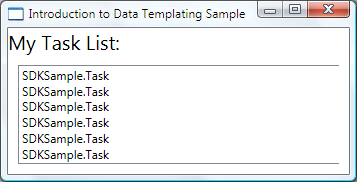
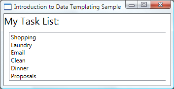
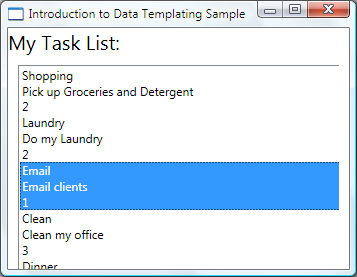
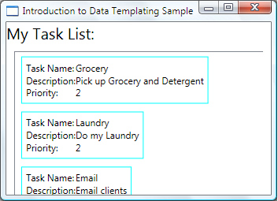
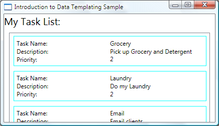
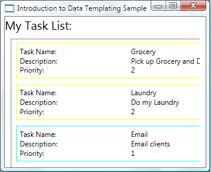
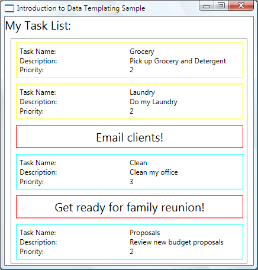
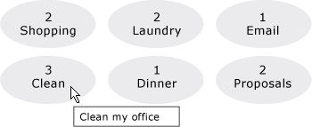
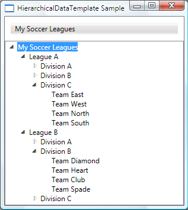

Общие сведения о шаблонах данных
Модель шаблонов данных WPF предоставляет большую гибкость при определении представления данных. Элементы управления WPF имеют встроенные функции для поддержки настройки представления данных. В этом разделе сначала демонстрируется определение DataTemplate , а затем предоставляются другие возможности шаблонов данных, такие как выбор шаблона на основе пользовательской логики и поддержка отображения иерархических данных.
Предварительные требования
В этом разделе рассматриваются функции шаблонов данных. Здесь отсутствуют общие сведения о понятиях привязки данных. Сведения о базовых концепциях привязки данных содержатся в разделе Обзор привязки данных.
DataTemplate является представлением данных и является одним из многих функций, предоставляемых моделью стилей и шаблонов WPF. Общие сведения о WPF Стилизация и использование шаблонов модели, например, как использовать Style для задания свойств элементов управления, см. в разделе Стилизация и использование шаблонов раздела.
Кроме того, важно понимать Resources, которые по сути являются что включать объекты, такие как Style и DataTemplate для повторного использования. Дополнительные сведения о ресурсах см. в разделе Ресурсы XAML.
Основные сведения о шаблонах данных
Чтобы продемонстрировать важность DataTemplate важно, давайте разберем пример привязки данных. В этом примере у нас есть ListBox , привязанный к списку Task объектов. Каждому Task объекту соответствует TaskName (строка), Description (строка), Priority (int) и свойство типа TaskType, которое является Enum со значениями Home и Work.
<Window x:Class="SDKSample.Window1"
xmlns="http://schemas.microsoft.com/winfx/2006/xaml/presentation"
xmlns:x="http://schemas.microsoft.com/winfx/2006/xaml"
xmlns:local="clr-namespace:SDKSample"
Title="Introduction to Data Templating Sample">
<Window.Resources>
<local:Tasks x:Key="myTodoList"/>
</Window.Resources>
<StackPanel>
<TextBlock Name="blah" FontSize="20" Text="My Task List:"/>
<ListBox Width="400" Margin="10"
ItemsSource="{Binding Source={StaticResource myTodoList}}"/>
</StackPanel>
</Window>
Без шаблона данных DataTemplate
Без DataTemplateнаш ListBox в данный момент выглядит следующим образом:

Что происходит: без конкретных инструкций ListBox по умолчанию вызывает ToString при попытке отображения объектов в коллекции. Таким образом Если Task переопределяет метод ToString метод, то ListBox отображает строковое представление каждого исходного объекта в базовой коллекции.
Например, если класс Task переопределяет метод ToString таким образом, что name — поле для TaskName свойства:
public override string ToString()
{
return name.ToString();
}
Warning
It looks like the sample you are looking for does not exist.
Затем ListBox выглядит следующим образом:

Тем не менее это характеризуется ограниченностью и негибкостью. Кроме того, если выполняется привязка к даннымXML, невозможно переопределить ToString.
Определение простого шаблона DataTemplate
Решением является определение DataTemplate. Один из способов это сделать, — присвоить ItemTemplate свойство ListBox для DataTemplate. Укажите в вашей DataTemplate , становится визуальной структурой вашего объекта данных. Следующие DataTemplate достаточно прост. Мы зададим инструкции, которые каждый элемент отображается как три TextBlock элементы внутри StackPanel. Каждый TextBlock элемент привязывается к свойству Task класса.
<ListBox Width="400" Margin="10"
ItemsSource="{Binding Source={StaticResource myTodoList}}">
<ListBox.ItemTemplate>
<DataTemplate>
<StackPanel>
<TextBlock Text="{Binding Path=TaskName}" />
<TextBlock Text="{Binding Path=Description}"/>
<TextBlock Text="{Binding Path=Priority}"/>
</StackPanel>
</DataTemplate>
</ListBox.ItemTemplate>
</ListBox>
Базовые данные в примерах этого раздела — это совокупность объектов CLR. Если выполнить привязку к данным XML, основные понятия схожи, но есть незначительные синтаксические различия. Например, вместо того, Path=TaskName, необходимо установить XPath для @TaskName (если TaskName является атрибутом вашего XML узла).
Теперь наши ListBox выглядит следующим образом:

Создание шаблона DataTemplate как ресурса
В приведенном выше примере мы определили DataTemplate встроенный. Обычно его определяют в разделе ресурсов, чтобы его можно было повторно использовать, как в следующем примере:
<Window.Resources>
<DataTemplate x:Key="myTaskTemplate">
<StackPanel>
<TextBlock Text="{Binding Path=TaskName}" />
<TextBlock Text="{Binding Path=Description}"/>
<TextBlock Text="{Binding Path=Priority}"/>
</StackPanel>
</DataTemplate>
</Window.Resources>
Теперь вы можете использовать myTaskTemplate в качестве ресурса, как показано в следующем примере:
<ListBox Width="400" Margin="10"
ItemsSource="{Binding Source={StaticResource myTodoList}}"
ItemTemplate="{StaticResource myTaskTemplate}"/>
Так как myTaskTemplate является ресурсом, теперь можно использовать его для других элементов управления, которые имеют свойства, которое принимает DataTemplate типа. Как показано выше, для ItemsControl объекты, такие как ListBox, это ItemTemplate свойство. Для ContentControl объектов, это ContentTemplate свойство.
Свойство DataType
DataTemplate Класс имеет DataType свойство, которое очень похоже на TargetType свойство Style класса. Таким образом, вместо указания x:Key для DataTemplate в приведенном выше примере можно сделать следующее:
<DataTemplate DataType="{x:Type local:Task}">
<StackPanel>
<TextBlock Text="{Binding Path=TaskName}" />
<TextBlock Text="{Binding Path=Description}"/>
<TextBlock Text="{Binding Path=Priority}"/>
</StackPanel>
</DataTemplate>
Это DataTemplate автоматически применяется ко всем Task объектов. Обратите внимание, что в этом случае x:Key устанавливается неявно. Таким образом при назначении этого DataTemplate x:Key значение, вы переопределяете явное x:Key и DataTemplate не будет применяться автоматически.
При связывании ContentControl на коллекцию Task объектов, ContentControl не используйте указанные выше DataTemplate автоматически. Это обусловлено привязки на ContentControl требуется больше информации для различения ли вы хотите выполнить привязку ко всей коллекции или отдельные объекты. Если ваш ContentControl отслеживает выбор ItemsControl типа, можно задать Path свойство ContentControl привязка к "/" для указания, что вы заинтересованы в текущем элементе. Для примера см. Выполнение привязки к коллекции и вывод сведений в зависимости от выделенного элемента. В противном случае необходимо указать DataTemplate явным образом задав ContentTemplate свойство.
DataType Свойство особенно полезно при наличии CompositeCollection различных типов объектов данных. Пример см. в разделе Реализация CompositeCollection.
Добавление дополнительных данных в DataTemplate
В настоящее время данные содержат необходимую информацию, но определенно это можно улучшить. Давайте улучшим представление, добавив Border, Gridи некоторые TextBlock элементы, описывающие данные, отображается.
<DataTemplate x:Key="myTaskTemplate">
<Border Name="border" BorderBrush="Aqua" BorderThickness="1"
Padding="5" Margin="5">
<Grid>
<Grid.RowDefinitions>
<RowDefinition/>
<RowDefinition/>
<RowDefinition/>
</Grid.RowDefinitions>
<Grid.ColumnDefinitions>
<ColumnDefinition />
<ColumnDefinition />
</Grid.ColumnDefinitions>
<TextBlock Grid.Row="0" Grid.Column="0" Text="Task Name:"/>
<TextBlock Grid.Row="0" Grid.Column="1" Text="{Binding Path=TaskName}" />
<TextBlock Grid.Row="1" Grid.Column="0" Text="Description:"/>
<TextBlock Grid.Row="1" Grid.Column="1" Text="{Binding Path=Description}"/>
<TextBlock Grid.Row="2" Grid.Column="0" Text="Priority:"/>
<TextBlock Grid.Row="2" Grid.Column="1" Text="{Binding Path=Priority}"/>
</Grid>
</Border>
</DataTemplate>
На следующем снимке экрана показан ListBox с этим измененным DataTemplate:

Можно установить HorizontalContentAlignment для Stretch на ListBox чтобы убедиться, что ширина элементов занимает все пространство:
<ListBox Width="400" Margin="10"
ItemsSource="{Binding Source={StaticResource myTodoList}}"
ItemTemplate="{StaticResource myTaskTemplate}"
HorizontalContentAlignment="Stretch"/>
С помощью HorizontalContentAlignment свойство значение Stretch, ListBox теперь выглядит следующим образом:

Использование триггеров данных для применения значений свойств
В настоящей презентации не говорится о том, является ли Task домашней задачей или офисной. Помните, что объект Task имеет свойство TaskType типа TaskType, который является перечислением со значениями Home и Work.
В следующем примере DataTrigger задает BorderBrush элемента с именем border для Yellow Если TaskType свойство TaskType.Home.
<DataTemplate x:Key="myTaskTemplate">
<DataTemplate.Triggers>
<DataTrigger Binding="{Binding Path=TaskType}">
<DataTrigger.Value>
<local:TaskType>Home</local:TaskType>
</DataTrigger.Value>
<Setter TargetName="border" Property="BorderBrush" Value="Yellow"/>
</DataTrigger>
</DataTemplate.Triggers>
</DataTemplate>
Наше приложение теперь выглядит следующим образом. Домашние задачи отображаются с желтой границей, а офисные — с синей границей:

В этом примере DataTrigger использует Setter для задания значения свойства. Классы триггера также имеют EnterActions и ExitActions свойства, позволяющие запускать ряд действий, например анимацию. Кроме того, имеется также MultiDataTrigger , позволяющий применять изменения на основе значений нескольких свойств с привязкой к данным.
Альтернативным способом достижения такого же эффекта является привязка BorderBrush свойства TaskType и использование преобразователя значения для возврата цвета на основе TaskType значение. Создание вышеупомянутого эффекта с помощью преобразователя является немного более эффективным с точки зрения производительности. Кроме того, создание собственных преобразователей обеспечивает большую гибкость, так как вы предоставляете свою собственную логику. В конечном счете выбор техники зависит от сценария и предпочтений. Сведения о том, как написать преобразователь см. в разделе IValueConverter.
Что входит в DataTemplate?
В предыдущем примере мы разместили триггер в DataTemplate с помощью DataTemplate.Triggers . Setter Триггера задает значение свойства элемента ( Border элемент), находится в пределах DataTemplate. Тем не менее если свойства, ваш Setters интересует не являются свойствами элементов, которые находятся в текущем DataTemplate, возможно, больше подойдет задание свойств с помощью Style , предназначенная для ListBoxItem класса (если элемент управления, связывании ListBox). Например, если вы хотите, чтобы ваши Trigger для анимации Opacity значение элемента при наведении указателя мыши на элемент, определите триггеры ListBoxItem стиля. Пример см. в разделе Вводная часть примера стилизации и использования шаблонов.
Как правило, имейте в виду, что DataTemplate , применяется к каждому созданного ListBoxItem (Дополнительные сведения о том, как и где он фактически применяется см. в разделе ItemTemplate страницы.). Ваш DataTemplate отвечает только за презентацию и внешний вид объектов данных. В большинстве случаев все другие аспекты представления, например как элемент выглядит при его выборе или как ListBox размещает элементы, не входящие в определение DataTemplate. Пример см. в разделе Стилизация и использование шаблонов для ItemsControl.
Выбор DataTemplate на основе свойств объекта данных
В разделе Свойство DataType мы говорили о том, что можно определить различные шаблоны данных для различных объектов данных. Это особенно полезно при наличии CompositeCollection различных типов или коллекций с элементами различных типов. В использование триггеров данных для применения значений свойств разделе было показано, что если у вас есть коллекция объектов данных одного типа можно создать DataTemplate и затем использовать триггеры для применения изменений на основании значений свойств Каждый объект данных. Тем не менее, хотя триггеры позволяют применить значения свойств или запустить анимацию, они не предоставляют гибкость, достаточную для реконструкции структуры объектов данных. Некоторые сценарии могут потребовать создания различных DataTemplate для данных объектов, которые имеют тот же тип, но разные свойства.
Например, если объект Task имеет значение Priority свойства 1, вы можете задать совершенно другой вид для него, чтобы сделать его сигналом оповещения. В этом случае создается DataTemplate для отображения с высоким приоритетом Task объектов. Давайте добавим следующий DataTemplate в раздел ресурсов:
<DataTemplate x:Key="importantTaskTemplate">
<DataTemplate.Resources>
<Style TargetType="TextBlock">
<Setter Property="FontSize" Value="20"/>
</Style>
</DataTemplate.Resources>
<Border Name="border" BorderBrush="Red" BorderThickness="1"
Padding="5" Margin="5">
<DockPanel HorizontalAlignment="Center">
<TextBlock Text="{Binding Path=Description}" />
<TextBlock>!</TextBlock>
</DockPanel>
</Border>
</DataTemplate>
Обратите внимание, что в этом примере используется DataTemplate.Resources . Ресурсы, определенные в этом разделе, являются общими для элементов внутри DataTemplate.
Чтобы задать логику выбирать, какие DataTemplate для использования на основе Priority значение объекта данных, создать подкласс DataTemplateSelector и переопределить SelectTemplate метод. В следующем примере SelectTemplate метод предоставляет логику для возвращения соответствующего шаблона на основе значения из Priority свойство. Возвращаемый шаблон находится в ресурсах Window элемент.
using System.Windows;
using System.Windows.Controls;
namespace SDKSample
{
public class TaskListDataTemplateSelector : DataTemplateSelector
{
public override DataTemplate
SelectTemplate(object item, DependencyObject container)
{
FrameworkElement element = container as FrameworkElement;
if (element != null && item != null && item is Task)
{
Task taskitem = item as Task;
if (taskitem.Priority == 1)
return
element.FindResource("importantTaskTemplate") as DataTemplate;
else
return
element.FindResource("myTaskTemplate") as DataTemplate;
}
return null;
}
}
}
Warning
It looks like the sample you are looking for does not exist.
Затем можно объявить TaskListDataTemplateSelector как ресурс:
<Window.Resources>
<local:TaskListDataTemplateSelector x:Key="myDataTemplateSelector"/>
</Window.Resources>
Для использования ресурса выбора шаблона, назначьте его ItemTemplateSelector свойство ListBox. ListBox Вызовы SelectTemplate метод TaskListDataTemplateSelector для каждого элемента в базовой коллекции. Вызов передает объект данных в качестве параметра элемента. DataTemplate , Возвращаемый метод применяется к объекту данных.
<ListBox Width="400" Margin="10"
ItemsSource="{Binding Source={StaticResource myTodoList}}"
ItemTemplateSelector="{StaticResource myDataTemplateSelector}"
HorizontalContentAlignment="Stretch"/>
С помощью выбора шаблона на месте ListBox теперь выглядит следующим образом:

Это заключительный шаг нашего обсуждения данного примера. Полный пример см. в разделе Вводная часть примера стилизации и использования шаблонов.
Стилизация и использование шаблонов для ItemsControl
Несмотря на то что ItemsControl не является единственным типом элемента управления, который можно использовать DataTemplate , это очень распространенный сценарий для привязки ItemsControl в коллекцию. В что входит в DataTemplate разделе мы рассмотрели, что определение вашего DataTemplate должен быть только за презентационный уровень данных. Чтобы узнать, когда это не подходит для использования DataTemplate важно понимать различные свойства стиля и шаблона, предоставляемые ItemsControl. Следующий пример предназначен для демонстрации функции каждого из этих свойств. ItemsControl В этом примере, привязан к той же Tasks коллекции, как показано в предыдущем примере. Для демонстрационных целей все стили и шаблоны в этом примере объявлены встроенными.
<ItemsControl Margin="10"
ItemsSource="{Binding Source={StaticResource myTodoList}}">
<!--The ItemsControl has no default visual appearance.
Use the Template property to specify a ControlTemplate to define
the appearance of an ItemsControl. The ItemsPresenter uses the specified
ItemsPanelTemplate (see below) to layout the items. If an
ItemsPanelTemplate is not specified, the default is used. (For ItemsControl,
the default is an ItemsPanelTemplate that specifies a StackPanel.-->
<ItemsControl.Template>
<ControlTemplate TargetType="ItemsControl">
<Border BorderBrush="Aqua" BorderThickness="1" CornerRadius="15">
<ItemsPresenter/>
</Border>
</ControlTemplate>
</ItemsControl.Template>
<!--Use the ItemsPanel property to specify an ItemsPanelTemplate
that defines the panel that is used to hold the generated items.
In other words, use this property if you want to affect
how the items are laid out.-->
<ItemsControl.ItemsPanel>
<ItemsPanelTemplate>
<WrapPanel />
</ItemsPanelTemplate>
</ItemsControl.ItemsPanel>
<!--Use the ItemTemplate to set a DataTemplate to define
the visualization of the data objects. This DataTemplate
specifies that each data object appears with the Proriity
and TaskName on top of a silver ellipse.-->
<ItemsControl.ItemTemplate>
<DataTemplate>
<DataTemplate.Resources>
<Style TargetType="TextBlock">
<Setter Property="FontSize" Value="18"/>
<Setter Property="HorizontalAlignment" Value="Center"/>
</Style>
</DataTemplate.Resources>
<Grid>
<Ellipse Fill="Silver"/>
<StackPanel>
<TextBlock Margin="3,3,3,0"
Text="{Binding Path=Priority}"/>
<TextBlock Margin="3,0,3,7"
Text="{Binding Path=TaskName}"/>
</StackPanel>
</Grid>
</DataTemplate>
</ItemsControl.ItemTemplate>
<!--Use the ItemContainerStyle property to specify the appearance
of the element that contains the data. This ItemContainerStyle
gives each item container a margin and a width. There is also
a trigger that sets a tooltip that shows the description of
the data object when the mouse hovers over the item container.-->
<ItemsControl.ItemContainerStyle>
<Style>
<Setter Property="Control.Width" Value="100"/>
<Setter Property="Control.Margin" Value="5"/>
<Style.Triggers>
<Trigger Property="Control.IsMouseOver" Value="True">
<Setter Property="Control.ToolTip"
Value="{Binding RelativeSource={x:Static RelativeSource.Self},
Path=Content.Description}"/>
</Trigger>
</Style.Triggers>
</Style>
</ItemsControl.ItemContainerStyle>
</ItemsControl>
Ниже приведен снимок экрана примера при его просмотре:

Обратите внимание, что вместо использования ItemTemplate, можно использовать ItemTemplateSelector. Пример см. в предыдущем разделе. Аналогичным образом, вместо использования ItemContainerStyle, у вас есть возможность использовать ItemContainerStyleSelector.
Два других относящихся к стилю свойства ItemsControl , не отображаются, вот GroupStyle и GroupStyleSelector.
Поддержка иерархических данных
Пока мы только рассматривали как привязывать и отображать одну коллекцию. Иногда встречается коллекция, содержащая другие коллекции. HierarchicalDataTemplate Класс предназначен для использования с HeaderedItemsControl типы для отображения таких данных. В следующем примере ListLeagueList является списком объектов League. Каждый объект League содержит Name и коллекцию объектов Division. Каждый Division содержит Name и коллекцию объектов Team, и каждый объект Team содержит Name.
<Window x:Class="SDKSample.Window1"
xmlns="http://schemas.microsoft.com/winfx/2006/xaml/presentation"
xmlns:x="http://schemas.microsoft.com/winfx/2006/xaml"
Title="HierarchicalDataTemplate Sample"
xmlns:src="clr-namespace:SDKSample">
<DockPanel>
<DockPanel.Resources>
<src:ListLeagueList x:Key="MyList"/>
<HierarchicalDataTemplate DataType = "{x:Type src:League}"
ItemsSource = "{Binding Path=Divisions}">
<TextBlock Text="{Binding Path=Name}"/>
</HierarchicalDataTemplate>
<HierarchicalDataTemplate DataType = "{x:Type src:Division}"
ItemsSource = "{Binding Path=Teams}">
<TextBlock Text="{Binding Path=Name}"/>
</HierarchicalDataTemplate>
<DataTemplate DataType="{x:Type src:Team}">
<TextBlock Text="{Binding Path=Name}"/>
</DataTemplate>
</DockPanel.Resources>
<Menu Name="menu1" DockPanel.Dock="Top" Margin="10,10,10,10">
<MenuItem Header="My Soccer Leagues"
ItemsSource="{Binding Source={StaticResource MyList}}" />
</Menu>
<TreeView>
<TreeViewItem ItemsSource="{Binding Source={StaticResource MyList}}" Header="My Soccer Leagues" />
</TreeView>
</DockPanel>
</Window>
Пример показывает, что с помощью HierarchicalDataTemplate, можно отобразить данные списка, содержащего другие списки. Ниже приведен снимок экрана примера.
